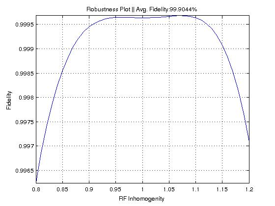

FileName : testRobust
Contents
Description
Plots the variation of fidelity with RF inhomeginity.
Command
testRobust(GRinfo,inc_range,range,state)
GRinfo : Variable in which all the information of grape pulse is stored.
inc_range : the increment value in spanning the range, default is 0.01.
range : min and mac value (range) of the RF inhomogenity, for example [0.8 1.2], default value is the RF inhomogenity range in pulse generation.
state : 'y' if the pulse is for state to state transfer, default is 'n'.
Example Output
Shown below is an example plot.

function testRobust(GRinfo,inc_range,rang,state) global gra gra=GRinfo; %---------------Declaring Defaults------------ if (nargin < 2 || isempty(inc_range)); inc_range=.01; end if (nargin < 3 || isempty(rang)); range=min(gra.rfINHrange):inc_range:max(gra.rfINHrange); else range=min(rang):inc_range:max(rang); end if (nargin < 4 || isempty(state)); state='n'; end %----------------------------------------------------------- X1(:,:,1)=eye(2^gra.nspins); U1=zeros(2^gra.nspins,2^gra.nspins,gra.N); A=zeros(1,gra.N); phi=zeros(1,gra.N); spinlist = gra.spinlist; u=gra.u; if state == 'y' gra.Ud = expm(1i*gra.Hint*gra.initdelay); gra.RHO_init = gra.Ud*gra.RHO_init*gra.Ud'; else gra.U_target=expm(1i*gra.initdelay*gra.Hint)*gra.Utarg*expm(1i*gra.initdelay*gra.Hint); end for k=1:length(range) for j=1:gra.N sum_hamil=zeros(2^gra.nspins); for n=1:length(spinlist) A(j,n)=range(k)*sqrt(u(j,n)^2+u(j,n+length(spinlist))^2); phi(j,n)=atan2(u(j,n+length(spinlist)),u(j,n)); sum_hamil = sum_hamil+A(j,n)*cos(phi(j,n))*(gra.Hrf{1,n}) + A(j,n)*sin(phi(j,n))*(gra.Hrf{1,n+length(spinlist)}); end U1(:,:,j) = expm(-1i*(gra.T/gra.N)*(gra.Hint + sum_hamil)); X1(:,:,j+1)=U1(:,:,j)*X1(:,:,j); end if state=='y' fidelity(k) = (abs(trace(gra.RHOtarg'*X1(:,:,gra.N+1)*gra.RHO_init*X1(:,:,gra.N+1)'))); else fidelity(k) = (abs(trace(gra.U_target'*X1(:,:,gra.N+1)))/2^(gra.nspins))^2; end end avgfil=100*mean(fidelity); fprintf('Average Fidelity : %2.6f\n',avgfil) %--------PLOT----------------- figure plot(range,fidelity) xlabel('RF Inhomogenity'); ylabel('Fidelity'); title('Robustness Plot') title(['Robustness Plot || Avg. Fidelity:',num2str(avgfil),'%']); grid on axis tight